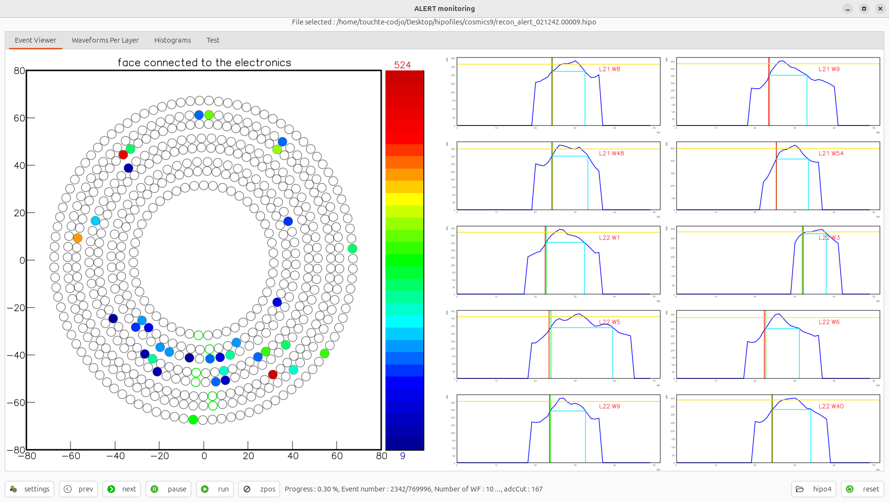
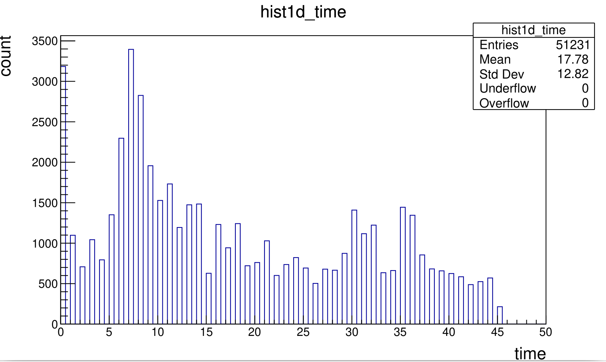

RG-L
This is the logbook of Felix Touchte Codjo. It aims to capture all the instants of the ALERT experiment.
DATE → 25-04-02
(25-04-02 11:29:16) Add new tab in mon12 for 1D time histograms
Add 1D histograms for timeMax, leadingEdgeTime, constantFractionTime, timeOverThreshold, wftime. Run 21042

(25-04-02 10:40:58) Add a 2D hist for wf::time in mon12
Issue fixed. The cut on the last layer has been changed. Run 21042

(25-04-02 10:29:02) Add a 2D hist for wf::time in mon12
The first channel time, AHDC::wf --> time is now plotted in the AHDC time tab. Run 21042. We can notice an issue. The layer 8 is not filled. This is due to a cut made during the last pull request, I guess.

(25-04-02 10:26:03) Move ToT in charge tab of mon12
Because the timeOverThreshold is related to the charge, i.e adcMax or integral. Run 21042
(25-04-02 09:09:03) Connection to ifarm changed
Connection to the ifarm changed. Now, you are using a new pin for the double authentification. Guess what ?
DATE → 25-04-01
(25-04-01 15:22:28) No ALERT related
Assumption of the starting point to plot 3D figure

(25-04-01 14:58:57) Not ALERT related
Starting point to plot 3D figure

DATE → 25-03-31
(25-03-31 11:39:33) Update of waveform display
Specific view in AHDC, Run 21242.00009 evt 2342.

(25-03-31 11:39:15) Update of waveform display
Now we use the decoding output from coatjava to display waveform in the event display of AMON 
DATE → 25-03-30
(25-03-30 17:36:30) May be a cosmic
Run 21242.00009, evt 21983 (if nb. starts at 1)

(25-03-30 08:33:10) LeadingEdgeTime in run 21242
AHDC::adc --> leadingEdgeTime
(25-03-30 08:31:24) First channel time in run 21242
AHDC::wf --> time

(25-03-30 08:28:55) File decoded
The file are decoded and available in local (run 21236, 21241, 21242)
(25-03-30 07:41:05) jcache run 21236, 21241, 21242
These runs remain to be cp and decoded. Goal : test the new ModeAHDC and the first channel time.
DATE → 25-03-29
(25-03-29 12:01:22) ModeAHDC functional
I loooked at the run 21110 with ZS=1 && ZStyp=0. The run is small but we can see that the first channel time distribution is always 0.

(25-03-29 11:44:32) ModeAHDC functional
Simple note. Run 21162 is ZS=1 && ZStyp=1
(25-03-29 11:37:50) ModeAHDC fonctionnal
Here is plot of the AHDC:::wf time which store the first channel time of the AHDC pulse.

(25-03-29 05:41:36) ModeAHDC updated
Here is the associated leadingEdgeTime

(25-03-29 05:34:46) ModeAHDC updated
All time quantity are perfectly translated by the first channel time. Here is a distribution of the timeMax.

(25-03-29 05:09:33) firstChannel issue FIXED
As suspected, the time was overwritten. We were still using the MVTFitter. Now let's do a pull request. 
(25-03-29 04:50:45) firstChannel issue
Here are the link fitPulses and dataList.
(25-03-29 04:48:11) firstChannel issue
I think I just find the error. What we call firstChannel seems to be modified in the method fitPulses() of DetectorEventDecoder. It is strange but we are still using the MVTFitter. To correct that I propose to comment the relevant bloc of code. Line 171
(25-03-29 04:09:37) Time from Bonus12
At the stage of the CodaEventDecoder, the firstChannel has reasonable values.
(25-03-29 03:50:55) Time from Bonus12
Here is the time (the first channel from DREAM manual) distribution. It is very strange, look like an ADC distribution. Probably not, I suspect this time to be modifed before reaching this stage. So I will debug like in old times, i.e do some println()...

(25-03-29 03:37:23) Time from Bonus12
Corresponding distribution of ADC before the correction I wanted to do. Really look like the time distribution :-(
(25-03-29 03:24:38) Time from Bonus12
Now I think to modify the code to retrieve the first channel.
(25-03-29 03:21:58) Time from Bonus12
Raw data, no modifications. Simple plot. Run 21162 over 20k events